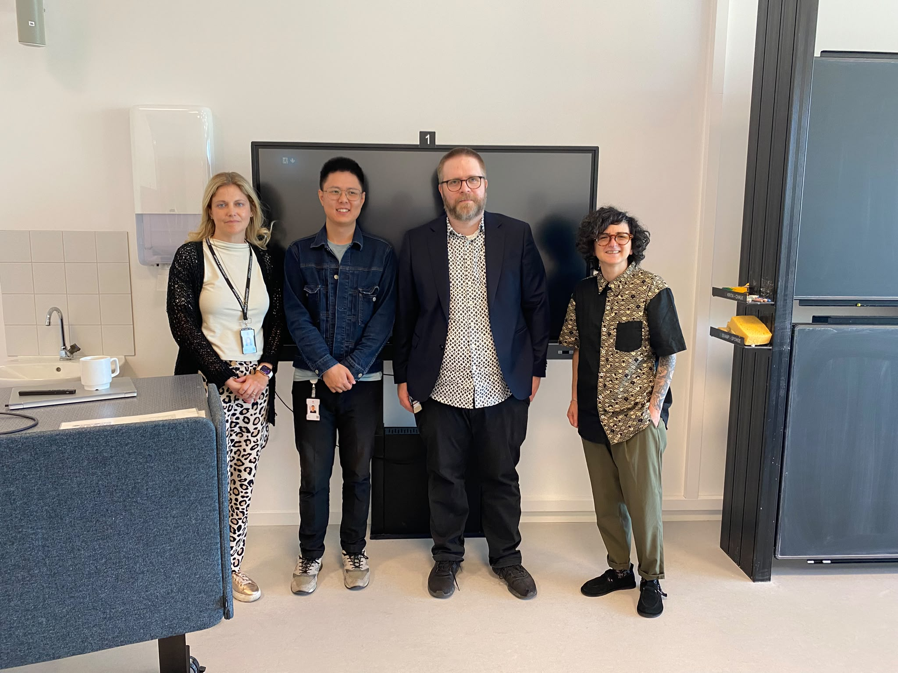

A PhD Milestone: Xuezhi Niu Completes the Half-Time Seminar
Post's content provided by: CPS-Lab Team
- When:
26 August 2026 - Where:
Uppsala University - Research area:
Heterogeneous multi-robot cooperation
We are delighted to celebrate an important milestone for CPS-Lab PhD student Xuezhi Niu, who has successfully completed the half-time seminar. The seminar marks the midpoint of the doctoral journey: a moment to reflect on the research completed so far, discuss its contributions, and sharpen the direction for the work ahead.

Making cooperation visible
Xuezhi presented the research under the title Enhancing Cooperation in Heterogeneous Multi-Robot Systems. The work asks how robots with different capabilities, resources, and roles can coordinate more effectively when the value of one robot's action may be realised by another robot. Drawing inspiration from ecological symbiosis, the research explores how selected partner information, relationship-aware reward features, and adaptive coordination structures can support cooperation in heterogeneous robot teams.
The seminar brought together the studies completed during the first half of the PhD and opened a valuable discussion about evidence, limitations, and priorities for the next phase. The path ahead includes deeper validation of the proposed mechanisms and focused evaluation with physical heterogeneous robots.
Warm thanks to supervisor Didem Gürdür Broo, co-supervisor Ginevra Castellano, and chair Per Mattsson for their guidance, thoughtful questions, and constructive feedback.
Report and seminar slides
Explore the complete half-time report or revisit the seminar presentation. For reliable viewing in any PDF reader, the downloadable slide deck uses representative still images in place of the original animations.
Onward to the second half
Completing the half-time seminar is both a celebration and a new beginning. Congratulations, Xuezhi, on reaching this milestone—we look forward to seeing the next chapter of the research take shape!
Photo credit: CPS-Lab team archive